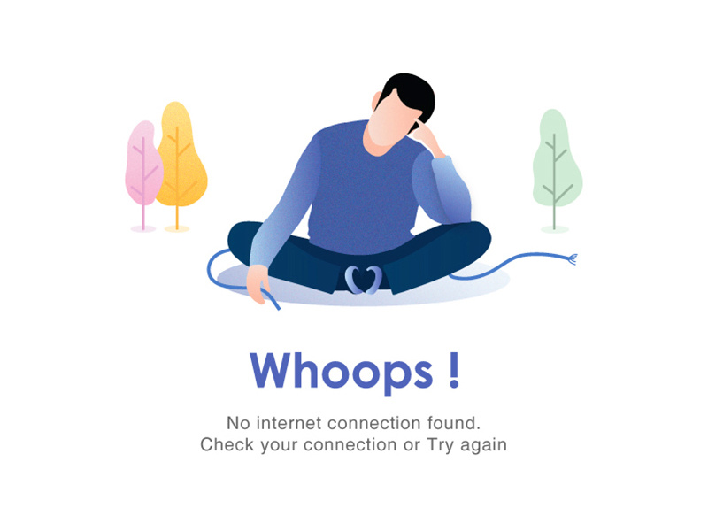

<ion-content>
  <div style="margin-top:50px;">
      
  </div>
<div>  
    <ion-fab vertical="center" horizontal="center" slot="fixed">
        <ion-fab-button (click)="clickPage()">
          <ion-icon name="refresh"></ion-icon>
        </ion-fab-button>
      </ion-fab>
</div>

</ion-content>
